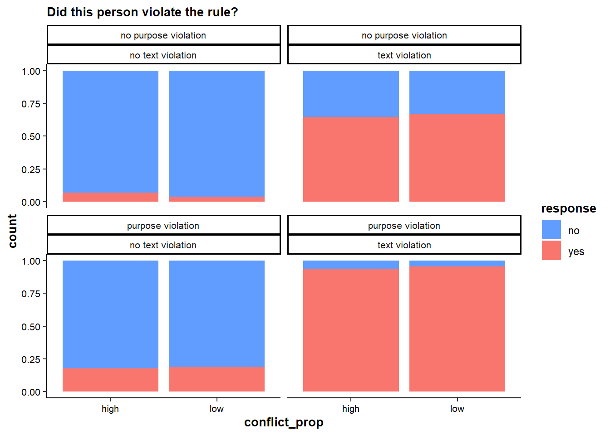
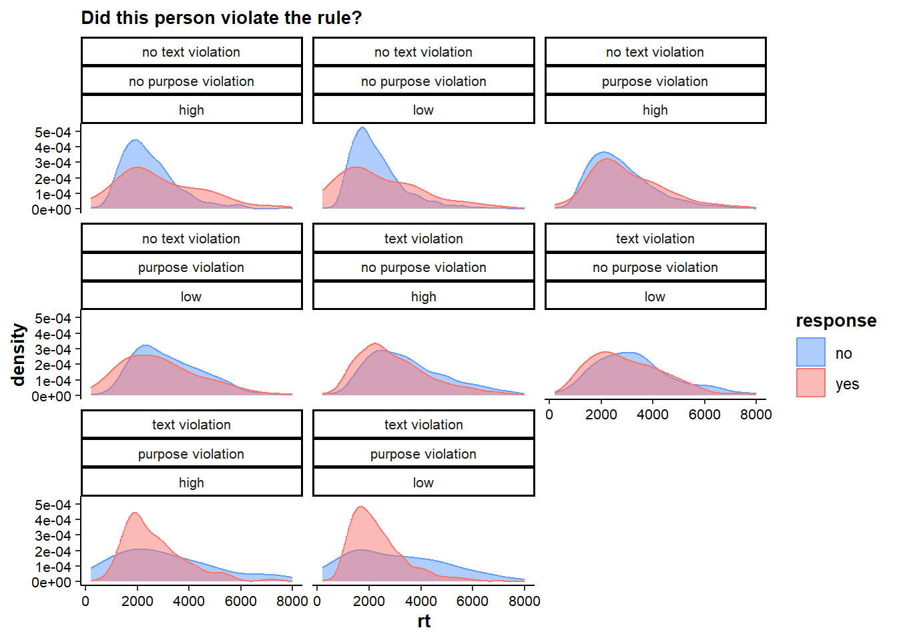
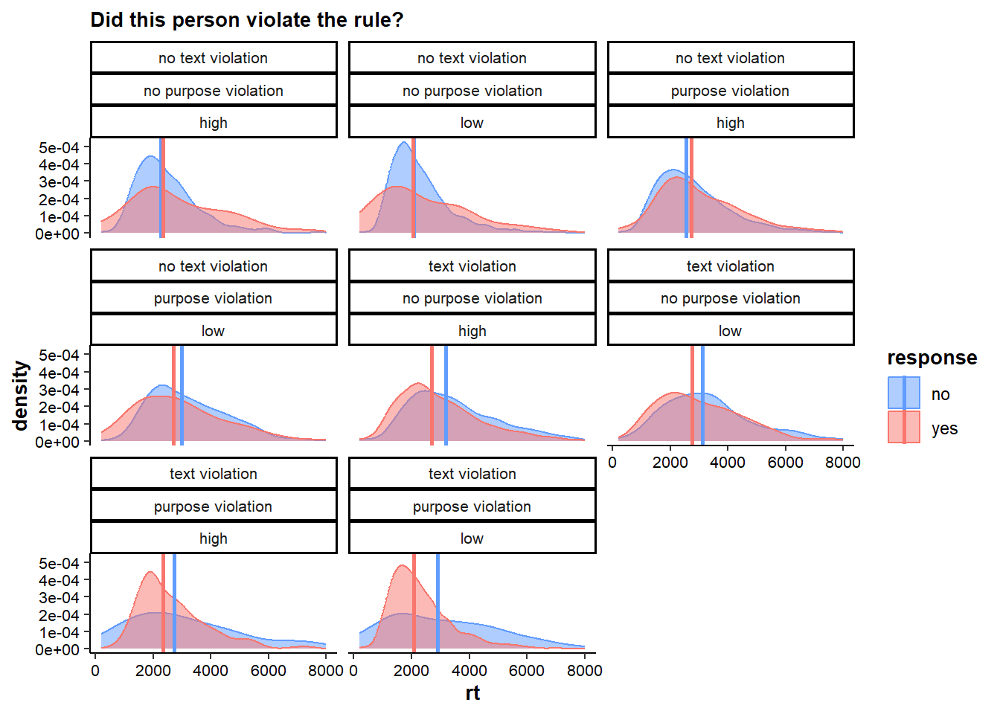

library(lmtest)
library(lme4)
library(nlme)
library(rcompanion)
library(reshape2)
library(here)
library(tidyverse)analysis
packages
data
clean <- read.csv(here("data","clean.csv"))plots
theme
mytheme <- theme_classic()+
theme(axis.text.x = element_text(color="black",size=8),
axis.title.x = element_text(color="black",size=10,face="bold"),
axis.text.y = element_text(color="black",size=8),
axis.title.y = element_text(color="black",size=10,face="bold"),
strip.text.x = element_text(size = 8),
legend.title = element_text(size = 10),
title = element_text(color="black",size=10,face="bold"),
legend.position = "right")judgments
plot
p1 <- clean %>%
mutate(text=case_when(
text==0 ~ "no text violation",
text==1 ~ "text violation"
),
purpose=case_when(
purpose==0 ~ "no purpose violation",
purpose==1 ~ "purpose violation"
),
response=case_when(
response==0 ~ "no",
response==1 ~ "yes")
) %>%
#ggplot(aes(x=response))+
#geom_bar(stat="count",aes(fill=response))+
ggplot(aes(x=conflict_prop,fill=response))+
geom_bar(position="fill")+
mytheme+
facet_wrap(~purpose+text)+
labs(subtitle="Did this person violate the rule?")+
scale_fill_manual(values=c("#619CFF","#F8766D"))
p1
# make dataframe to get confidence intervals
judgments_CI <- clean |>
mutate(text=case_when(
text==0 ~ "no text violation",
text==1 ~ "text violation"
),
purpose=case_when(
purpose==0 ~ "no purpose violation",
purpose==1 ~ "purpose violation"
),
response=case_when(
response==0 ~ "no",
response==1 ~ "yes")
) %>%
group_by(purpose,text,conflict_prop,response) |>
summarize(n = n()) |>
mutate(prop = round(n/sum(n),2),
se = sqrt(prop*(1-prop)/n),
CI_lower = round(prop - 1.96*se,2),
CI_upper = round(prop + 1.96*se,2)) |>
filter(response=="yes")
# add to plot
p1 <- p1 +
geom_linerange(data=judgments_CI,aes(ymin=CI_lower,ymax=CI_upper))+
coord_cartesian()+
labs(x="\nproportion of conflict trials")save
ggsave(p1,file=here("figures","judgments.png"),width=13,height=17,units="cm")rts
plot
p2 <- clean %>%
mutate(text=case_when(
text==0 ~ "no text violation",
text==1 ~ "text violation"
),
purpose=case_when(
purpose==0 ~ "no purpose violation",
purpose==1 ~ "purpose violation"
),
response=case_when(
response==0 ~ "no",
response==1 ~ "yes")
) %>%
ggplot(aes(x=rt))+
geom_density(aes(fill=response,color=response),alpha=0.5)+
facet_wrap(~text+purpose+conflict_prop)+
mytheme+
labs(subtitle="Did this person violate the rule?")+
scale_fill_manual(values=c("#619CFF","#F8766D"))+
scale_color_manual(values=c("#619CFF","#F8766D"))
p2
#median rts for overlaying
median_rts <- clean %>%
mutate(text=case_when(
text==0 ~ "no text violation",
text==1 ~ "text violation"
),
purpose=case_when(
purpose==0 ~ "no purpose violation",
purpose==1 ~ "purpose violation"
),
response=case_when(
response==0 ~ "no",
response==1 ~ "yes")
) %>%
group_by(text,purpose,response,conflict_prop) %>%
summarize(rt = median(rt))
#overlay medians
p2 <- p2 + geom_vline(data=median_rts,aes(xintercept=rt,color=response),linewidth=1)
p2
save
ggsave(p2,file=here("figures","rts.png"),width=13,height=17,units="cm")preregistered analyses
judgments
descriptives
clean |>
group_by(condition,conflict_prop,response) |>
summarize(n = n()) |>
mutate(prop = round(n/sum(n),2),
se = sqrt(prop*(1-prop)/n),
CI_lower = round(prop - 1.96*se,2),
CI_upper = round(prop + 1.96*se,2))# A tibble: 16 × 8
# Groups: condition, conflict_prop [8]
condition conflict_prop response n prop se CI_lower CI_upper
<chr> <chr> <int> <int> <dbl> <dbl> <dbl> <dbl>
1 full violation high 0 30 0.06 0.0434 -0.02 0.14
2 full violation high 1 448 0.94 0.0112 0.92 0.96
3 full violation low 0 111 0.05 0.0207 0.01 0.09
4 full violation low 1 2290 0.95 0.00455 0.94 0.96
5 no violation high 0 450 0.93 0.0120 0.91 0.95
6 no violation high 1 33 0.07 0.0444 -0.02 0.16
7 no violation low 0 2313 0.96 0.00407 0.95 0.97
8 no violation low 1 88 0.04 0.0209 0 0.08
9 purpose violati… high 0 1967 0.82 0.00866 0.8 0.84
10 purpose violati… high 1 422 0.18 0.0187 0.14 0.22
11 purpose violati… low 0 391 0.81 0.0198 0.77 0.85
12 purpose violati… low 1 89 0.19 0.0416 0.11 0.27
13 text violation high 0 840 0.35 0.0165 0.32 0.38
14 text violation high 1 1533 0.65 0.0122 0.63 0.67
15 text violation low 0 157 0.33 0.0375 0.26 0.4
16 text violation low 1 320 0.67 0.0263 0.62 0.72clean |>
group_by(condition,response) |>
summarize(n = n()) |>
mutate(prop = round(n/sum(n),2),
se = sqrt(prop*(1-prop)/n),
CI_lower = round(prop - 1.96*se,2),
CI_upper = round(prop + 1.96*se,2))# A tibble: 8 × 7
# Groups: condition [4]
condition response n prop se CI_lower CI_upper
<chr> <int> <int> <dbl> <dbl> <dbl> <dbl>
1 full violation 0 141 0.05 0.0184 0.01 0.09
2 full violation 1 2738 0.95 0.00417 0.94 0.96
3 no violation 0 2763 0.96 0.00373 0.95 0.97
4 no violation 1 121 0.04 0.0178 0.01 0.07
5 purpose violation 0 2358 0.82 0.00791 0.8 0.84
6 purpose violation 1 511 0.18 0.0170 0.15 0.21
7 text violation 0 997 0.35 0.0151 0.32 0.38
8 text violation 1 1853 0.65 0.0111 0.63 0.67logistic regression
“1) We will conduct a mixed-effects logistic regression of rule violation judgments, with proportion, text, purpose and every two- and three-way interaction as fixed effects (and scenarios and participants as crossed, random effects). We predict main (i.e., positive) effects of text and purpose.”
# null model
null <- glmer(response ~ 1 + (1|subj_code) + (1|scen), data = clean,na.action=na.exclude, family=binomial)
# main effect text
purpose_only <- glmer(response ~ purpose + (1|subj_code) + (1|scen), data = clean,na.action=na.exclude, family=binomial)
purpose_text <- glmer(response ~ purpose + text + (1|subj_code) + (1|scen), data = clean,na.action=na.exclude, family=binomial)
lrtest(null,purpose_only)Likelihood ratio test
Model 1: response ~ 1 + (1 | subj_code) + (1 | scen)
Model 2: response ~ purpose + (1 | subj_code) + (1 | scen)
#Df LogLik Df Chisq Pr(>Chisq)
1 3 -7887.3
2 4 -7599.7 1 575.17 < 2.2e-16 ***
---
Signif. codes: 0 '***' 0.001 '**' 0.01 '*' 0.05 '.' 0.1 ' ' 1lrtest(null,purpose_text) # either model better than nullLikelihood ratio test
Model 1: response ~ 1 + (1 | subj_code) + (1 | scen)
Model 2: response ~ purpose + text + (1 | subj_code) + (1 | scen)
#Df LogLik Df Chisq Pr(>Chisq)
1 3 -7887.3
2 5 -4170.9 2 7432.8 < 2.2e-16 ***
---
Signif. codes: 0 '***' 0.001 '**' 0.01 '*' 0.05 '.' 0.1 ' ' 1lrtest(purpose_only,purpose_text) # better with text compared to purpose alone (main effect)Likelihood ratio test
Model 1: response ~ purpose + (1 | subj_code) + (1 | scen)
Model 2: response ~ purpose + text + (1 | subj_code) + (1 | scen)
#Df LogLik Df Chisq Pr(>Chisq)
1 4 -7599.7
2 5 -4170.9 1 6857.6 < 2.2e-16 ***
---
Signif. codes: 0 '***' 0.001 '**' 0.01 '*' 0.05 '.' 0.1 ' ' 1# main effect purpose
text_only <- glmer(response ~ text + (1|subj_code) + (1|scen), data = clean,na.action=na.exclude, family=binomial)
lrtest(text_only,purpose_text) # better with purposeLikelihood ratio test
Model 1: response ~ text + (1 | subj_code) + (1 | scen)
Model 2: response ~ purpose + text + (1 | subj_code) + (1 | scen)
#Df LogLik Df Chisq Pr(>Chisq)
1 4 -4762.4
2 5 -4170.9 1 1183.2 < 2.2e-16 ***
---
Signif. codes: 0 '***' 0.001 '**' 0.01 '*' 0.05 '.' 0.1 ' ' 1# main effect proportion congruency
text_purpose_prop <- glmer(response ~ purpose + text + conflict_prop + (1|subj_code) + (1|scen), data = clean,na.action=na.exclude, family=binomial)
lrtest(purpose_text,text_purpose_prop) # better - this is unexpected!Likelihood ratio test
Model 1: response ~ purpose + text + (1 | subj_code) + (1 | scen)
Model 2: response ~ purpose + text + conflict_prop + (1 | subj_code) +
(1 | scen)
#Df LogLik Df Chisq Pr(>Chisq)
1 5 -4170.9
2 6 -4166.4 1 9.0087 0.002687 **
---
Signif. codes: 0 '***' 0.001 '**' 0.01 '*' 0.05 '.' 0.1 ' ' 1# interaction text x purpose
interaction_textXpurpose <- glmer(response ~ purpose * text + conflict_prop + (1|subj_code) + (1|scen), data = clean,na.action=na.exclude, family=binomial)
lrtest(text_purpose_prop, interaction_textXpurpose) # betterLikelihood ratio test
Model 1: response ~ purpose + text + conflict_prop + (1 | subj_code) +
(1 | scen)
Model 2: response ~ purpose * text + conflict_prop + (1 | subj_code) +
(1 | scen)
#Df LogLik Df Chisq Pr(>Chisq)
1 6 -4166.4
2 7 -4157.7 1 17.211 3.345e-05 ***
---
Signif. codes: 0 '***' 0.001 '**' 0.01 '*' 0.05 '.' 0.1 ' ' 1# interaction text x prop
interaction_textXpurpose_textXprop <- glmer(response ~ purpose * text + conflict_prop * text + (1|subj_code) + (1|scen), data = clean,na.action=na.exclude, family=binomial)
lrtest(interaction_textXpurpose,interaction_textXpurpose_textXprop) # not betterLikelihood ratio test
Model 1: response ~ purpose * text + conflict_prop + (1 | subj_code) +
(1 | scen)
Model 2: response ~ purpose * text + conflict_prop * text + (1 | subj_code) +
(1 | scen)
#Df LogLik Df Chisq Pr(>Chisq)
1 7 -4157.7
2 8 -4156.0 1 3.401 0.06516 .
---
Signif. codes: 0 '***' 0.001 '**' 0.01 '*' 0.05 '.' 0.1 ' ' 1# interaction purpose x prop
interaction_textXpurpose_purposeXprop <- glmer(response ~ purpose * text + conflict_prop * purpose + (1|subj_code) + (1|scen), data = clean,na.action=na.exclude, family=binomial)
lrtest(interaction_textXpurpose,interaction_textXpurpose_purposeXprop) # not betterLikelihood ratio test
Model 1: response ~ purpose * text + conflict_prop + (1 | subj_code) +
(1 | scen)
Model 2: response ~ purpose * text + conflict_prop * purpose + (1 | subj_code) +
(1 | scen)
#Df LogLik Df Chisq Pr(>Chisq)
1 7 -4157.7
2 8 -4157.2 1 1.1608 0.2813# three-way interaction
interaction_threeway <- glmer(response ~ purpose * text + conflict_prop*purpose*text + (1|subj_code) + (1|scen), data = clean,na.action=na.exclude, family=binomial)
lrtest(interaction_textXpurpose,interaction_threeway) # betterLikelihood ratio test
Model 1: response ~ purpose * text + conflict_prop + (1 | subj_code) +
(1 | scen)
Model 2: response ~ purpose * text + conflict_prop * purpose * text +
(1 | subj_code) + (1 | scen)
#Df LogLik Df Chisq Pr(>Chisq)
1 7 -4157.7
2 10 -4151.7 3 12.111 0.007014 **
---
Signif. codes: 0 '***' 0.001 '**' 0.01 '*' 0.05 '.' 0.1 ' ' 1# final model
finalmodel_judgments <- interaction_threeway
summary(finalmodel_judgments)Generalized linear mixed model fit by maximum likelihood (Laplace
Approximation) [glmerMod]
Family: binomial ( logit )
Formula: response ~ purpose * text + conflict_prop * purpose * text +
(1 | subj_code) + (1 | scen)
Data: clean
AIC BIC logLik deviance df.resid
8323.4 8396.9 -4151.7 8303.4 11472
Scaled residuals:
Min 1Q Median 3Q Max
-13.0214 -0.3837 -0.1534 0.2725 7.1323
Random effects:
Groups Name Variance Std.Dev.
subj_code (Intercept) 0.1621 0.4026
scen (Intercept) 0.1084 0.3292
Number of obs: 11482, groups: subj_code, 121; scen, 8
Fixed effects:
Estimate Std. Error z value Pr(>|z|)
(Intercept) -2.7163 0.2197 -12.361 < 2e-16 ***
purpose 1.1077 0.1903 5.820 5.87e-09 ***
text 3.3722 0.1885 17.891 < 2e-16 ***
conflict_proplow -0.6945 0.2126 -3.266 0.00109 **
purpose:text 1.0664 0.2727 3.911 9.19e-05 ***
purpose:conflict_proplow 0.7273 0.2500 2.909 0.00362 **
text:conflict_proplow 0.7787 0.2391 3.257 0.00113 **
purpose:text:conflict_proplow -0.5157 0.3467 -1.487 0.13692
---
Signif. codes: 0 '***' 0.001 '**' 0.01 '*' 0.05 '.' 0.1 ' ' 1
Correlation of Fixed Effects:
(Intr) purpos text cnflc_ prps:t prps:_ txt:c_
purpose -0.795
text -0.808 0.928
cnflct_prpl -0.710 0.820 0.827
purpose:txt 0.553 -0.697 -0.683 -0.573
prps:cnflc_ 0.604 -0.761 -0.704 -0.849 0.531
txt:cnflct_ 0.632 -0.729 -0.779 -0.889 0.539 0.755
prps:txt:c_ -0.435 0.548 0.537 0.612 -0.786 -0.721 -0.689nagelkerke(finalmodel_judgments,null)$Models
Model: "glmer, response ~ purpose * text + conflict_prop * purpose * text + (1 | subj_code) + (1 | scen), clean, binomial, na.exclude"
Null: "glmer, response ~ 1 + (1 | subj_code) + (1 | scen), clean, binomial, na.exclude"
$Pseudo.R.squared.for.model.vs.null
Pseudo.R.squared
McFadden 0.473620
Cox and Snell (ML) 0.478310
Nagelkerke (Cragg and Uhler) 0.640421
$Likelihood.ratio.test
Df.diff LogLik.diff Chisq p.value
-7 -3735.6 7471.1 0
$Number.of.observations
Model: 11482
Null: 11482
$Messages
[1] "Note: For models fit with REML, these statistics are based on refitting with ML"
$Warnings
[1] "None"explore main effect of conflict prop
clean |>
group_by(conflict_prop,response) |>
summarize(n=n()) |>
mutate(prop = n/sum(n))# A tibble: 4 × 4
# Groups: conflict_prop [2]
conflict_prop response n prop
<chr> <int> <int> <dbl>
1 high 0 3287 0.574
2 high 1 2436 0.426
3 low 0 2972 0.516
4 low 1 2787 0.484When there are few conflict trials: Most cases are clear, half of them are clear violations, and the other half are clear cases of compliance. Only few conflict trials where there is wiggle room. So we see an almost exact 50/50 split between no and yes responses in these conditions:
clean |>
group_by(condition,response) |>
summarize(n=n())|>
mutate(prop = n/sum(n))# A tibble: 8 × 4
# Groups: condition [4]
condition response n prop
<chr> <int> <int> <dbl>
1 full violation 0 141 0.0490
2 full violation 1 2738 0.951
3 no violation 0 2763 0.958
4 no violation 1 121 0.0420
5 purpose violation 0 2358 0.822
6 purpose violation 1 511 0.178
7 text violation 0 997 0.350
8 text violation 1 1853 0.650 When there are many conflict trials: Only few cases are clear violations or clear cases of compliance. Most cases are either purpose violations or text violations, to an equal proportion. Text violations elicit mostly “yes” responses. Purpose violations elicit mostly “no” responses. It’s around 80% no’s for purpose violations though, and only around 65% yes’s for text violations. So combined with our knowledge about the frequency of types of trials, we’d expect overall more “no” responses in the high conflict proportion conditions.
BUT these are effects of the levels of text and purpose and their combinations. They should disappear once text and purpose are accounted for in the model…
What’s the direction of the main effect of conflict proportion?
summary(text_purpose_prop)Generalized linear mixed model fit by maximum likelihood (Laplace
Approximation) [glmerMod]
Family: binomial ( logit )
Formula: response ~ purpose + text + conflict_prop + (1 | subj_code) +
(1 | scen)
Data: clean
AIC BIC logLik deviance df.resid
8344.7 8388.8 -4166.4 8332.7 11476
Scaled residuals:
Min 1Q Median 3Q Max
-11.9033 -0.3912 -0.1413 0.2944 8.6392
Random effects:
Groups Name Variance Std.Dev.
subj_code (Intercept) 0.1614 0.4017
scen (Intercept) 0.1074 0.3278
Number of obs: 11482, groups: subj_code, 121; scen, 8
Fixed effects:
Estimate Std. Error z value Pr(>|z|)
(Intercept) -3.65020 0.14325 -25.481 < 2e-16 ***
purpose 2.07199 0.07205 28.757 < 2e-16 ***
text 4.32804 0.07555 57.285 < 2e-16 ***
conflict_proplow 0.18718 0.06225 3.007 0.00264 **
---
Signif. codes: 0 '***' 0.001 '**' 0.01 '*' 0.05 '.' 0.1 ' ' 1
Correlation of Fixed Effects:
(Intr) purpos text
purpose -0.402
text -0.445 0.610
cnflct_prpl -0.083 -0.123 -0.059Do we see such an effect after accounting for the levels of text and purpose?
clean |>
group_by(condition,conflict_prop,response) |>
summarize(n=n())|>
mutate(prop = n/sum(n)) |>
filter(response==1)# A tibble: 8 × 5
# Groups: condition, conflict_prop [8]
condition conflict_prop response n prop
<chr> <chr> <int> <int> <dbl>
1 full violation high 1 448 0.937
2 full violation low 1 2290 0.954
3 no violation high 1 33 0.0683
4 no violation low 1 88 0.0367
5 purpose violation high 1 422 0.177
6 purpose violation low 1 89 0.185
7 text violation high 1 1533 0.646
8 text violation low 1 320 0.671 We do in all conditions except no violation, but it’s tiny… So it’s probably an issue of very high power because of all the repeated measures
calculate ORs
clean |>
group_by(condition,conflict_prop,response) |>
summarize(n=n())|>
mutate(prop = n/sum(n))# A tibble: 16 × 5
# Groups: condition, conflict_prop [8]
condition conflict_prop response n prop
<chr> <chr> <int> <int> <dbl>
1 full violation high 0 30 0.0628
2 full violation high 1 448 0.937
3 full violation low 0 111 0.0462
4 full violation low 1 2290 0.954
5 no violation high 0 450 0.932
6 no violation high 1 33 0.0683
7 no violation low 0 2313 0.963
8 no violation low 1 88 0.0367
9 purpose violation high 0 1967 0.823
10 purpose violation high 1 422 0.177
11 purpose violation low 0 391 0.815
12 purpose violation low 1 89 0.185
13 text violation high 0 840 0.354
14 text violation high 1 1533 0.646
15 text violation low 0 157 0.329
16 text violation low 1 320 0.671 #OR for yes response, full violation, low/high congruency condition
(2290/111)/(448/30)[1] 1.381515#OR for yes response, no violation, low/high congruency condition
(88/2313)/(33/450)[1] 0.5188067#OR for yes response, purpose violation, low/high congruency condition
(89/391)/(422/1967)[1] 1.060975#OR for yes response, text violation, low/high congruency condition
(320/157)/(1533/840)[1] 1.116831rts
“2) We will run a mixed-effects regression of response times, with proportion, congruency and the proportion*congruency interaction as fixed effects (and scenario and participant as crossed random effects).”
descriptives
clean |>
group_by(conflict_prop,congruent) |>
summarize(median = median(rt))# A tibble: 4 × 3
# Groups: conflict_prop [2]
conflict_prop congruent median
<chr> <int> <dbl>
1 high 0 2711
2 high 1 2316
3 low 0 2902
4 low 1 2080.linear model
# null model
null <- lmer(rt ~ 1 + (1|subj_code) + (1|scen), data = clean,na.action=na.exclude)
# main effect congruency
prop <- lmer(rt ~ conflict_prop + (1|subj_code) + (1|scen), data = clean,na.action=na.exclude)
congruency_prop <- lmer(rt ~ congruent + conflict_prop + (1|subj_code) + (1|scen), data = clean,na.action=na.exclude)
lrtest(prop,congruency_prop) # better with congruencyLikelihood ratio test
Model 1: rt ~ conflict_prop + (1 | subj_code) + (1 | scen)
Model 2: rt ~ congruent + conflict_prop + (1 | subj_code) + (1 | scen)
#Df LogLik Df Chisq Pr(>Chisq)
1 5 -96957
2 6 -96719 1 476.37 < 2.2e-16 ***
---
Signif. codes: 0 '***' 0.001 '**' 0.01 '*' 0.05 '.' 0.1 ' ' 1# main effect proportion
congruency <- lmer(rt ~ congruent + (1|subj_code) + (1|scen), data = clean,na.action=na.exclude)
lrtest(congruency, congruency_prop) # better with proportionLikelihood ratio test
Model 1: rt ~ congruent + (1 | subj_code) + (1 | scen)
Model 2: rt ~ congruent + conflict_prop + (1 | subj_code) + (1 | scen)
#Df LogLik Df Chisq Pr(>Chisq)
1 5 -96724
2 6 -96719 1 10.566 0.001152 **
---
Signif. codes: 0 '***' 0.001 '**' 0.01 '*' 0.05 '.' 0.1 ' ' 1# interaction
congruencyXprop <- lmer(rt ~ congruent * conflict_prop + (1|subj_code) + (1|scen), data = clean,na.action=na.exclude)
lrtest(congruency_prop,congruencyXprop) # betterLikelihood ratio test
Model 1: rt ~ congruent + conflict_prop + (1 | subj_code) + (1 | scen)
Model 2: rt ~ congruent * conflict_prop + (1 | subj_code) + (1 | scen)
#Df LogLik Df Chisq Pr(>Chisq)
1 6 -96719
2 7 -96687 1 63.055 2.01e-15 ***
---
Signif. codes: 0 '***' 0.001 '**' 0.01 '*' 0.05 '.' 0.1 ' ' 1supplementary analyses
rts
descriptives
clean |>
group_by(condition) |>
summarize(median = median(rt))# A tibble: 4 × 2
condition median
<chr> <dbl>
1 full violation 2139
2 no violation 2092.
3 purpose violation 2632
4 text violation 2846 clean |>
group_by(response) |>
summarize(median = median(rt))# A tibble: 2 × 2
response median
<int> <int>
1 0 2424
2 1 2353clean |>
group_by(conflict_prop) |>
summarize(median = median(rt))# A tibble: 2 × 2
conflict_prop median
<chr> <int>
1 high 2647
2 low 2185clean |>
group_by(condition,response, conflict_prop) |>
summarize(median = median(rt))# A tibble: 16 × 4
# Groups: condition, response [8]
condition response conflict_prop median
<chr> <int> <chr> <dbl>
1 full violation 0 high 2746.
2 full violation 0 low 2896
3 full violation 1 high 2354
4 full violation 1 low 2088.
5 no violation 0 high 2266.
6 no violation 0 low 2065
7 no violation 1 high 2343
8 no violation 1 low 2054.
9 purpose violation 0 high 2564
10 purpose violation 0 low 2985
11 purpose violation 1 high 2728.
12 purpose violation 1 low 2716
13 text violation 0 high 3197
14 text violation 0 low 3121
15 text violation 1 high 2684
16 text violation 1 low 2752.linear model
# null model
null <- glmer(rt ~ 1 + (1|subj_code) + (1|scen), data = clean,na.action=na.exclude)
# main effect text
purpose_only <- lmer(rt ~ purpose + (1|subj_code) + (1|scen), data = clean,na.action=na.exclude)
purpose_text <- lmer(rt ~ purpose + text + (1|subj_code) + (1|scen), data = clean,na.action=na.exclude)
lrtest(purpose_only,purpose_text) # better with textLikelihood ratio test
Model 1: rt ~ purpose + (1 | subj_code) + (1 | scen)
Model 2: rt ~ purpose + text + (1 | subj_code) + (1 | scen)
#Df LogLik Df Chisq Pr(>Chisq)
1 5 -97163
2 6 -97134 1 57.855 2.822e-14 ***
---
Signif. codes: 0 '***' 0.001 '**' 0.01 '*' 0.05 '.' 0.1 ' ' 1# main effect purpose
text_only <- lmer(rt ~ text + (1|subj_code) + (1|scen), data = clean,na.action=na.exclude)
lrtest(text_only,purpose_text) # better with purposeLikelihood ratio test
Model 1: rt ~ text + (1 | subj_code) + (1 | scen)
Model 2: rt ~ purpose + text + (1 | subj_code) + (1 | scen)
#Df LogLik Df Chisq Pr(>Chisq)
1 5 -97146
2 6 -97134 1 24.134 8.986e-07 ***
---
Signif. codes: 0 '***' 0.001 '**' 0.01 '*' 0.05 '.' 0.1 ' ' 1# main effect response
response <- lmer(rt ~ purpose + text + response + (1|subj_code) + (1|scen), data = clean,na.action=na.exclude)
lrtest(purpose_text, response) #betterLikelihood ratio test
Model 1: rt ~ purpose + text + (1 | subj_code) + (1 | scen)
Model 2: rt ~ purpose + text + response + (1 | subj_code) + (1 | scen)
#Df LogLik Df Chisq Pr(>Chisq)
1 6 -97134
2 7 -97084 1 101.37 < 2.2e-16 ***
---
Signif. codes: 0 '***' 0.001 '**' 0.01 '*' 0.05 '.' 0.1 ' ' 1# interaction text x purpose
interaction <- lmer(rt ~ purpose*text + response + (1|subj_code) + (1|scen), data = clean,na.action=na.exclude)
lrtest(response,interaction) # betterLikelihood ratio test
Model 1: rt ~ purpose + text + response + (1 | subj_code) + (1 | scen)
Model 2: rt ~ purpose * text + response + (1 | subj_code) + (1 | scen)
#Df LogLik Df Chisq Pr(>Chisq)
1 7 -97084
2 8 -96655 1 858.17 < 2.2e-16 ***
---
Signif. codes: 0 '***' 0.001 '**' 0.01 '*' 0.05 '.' 0.1 ' ' 1